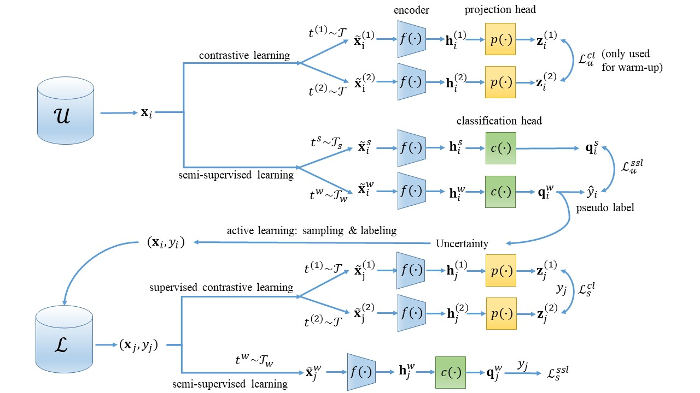
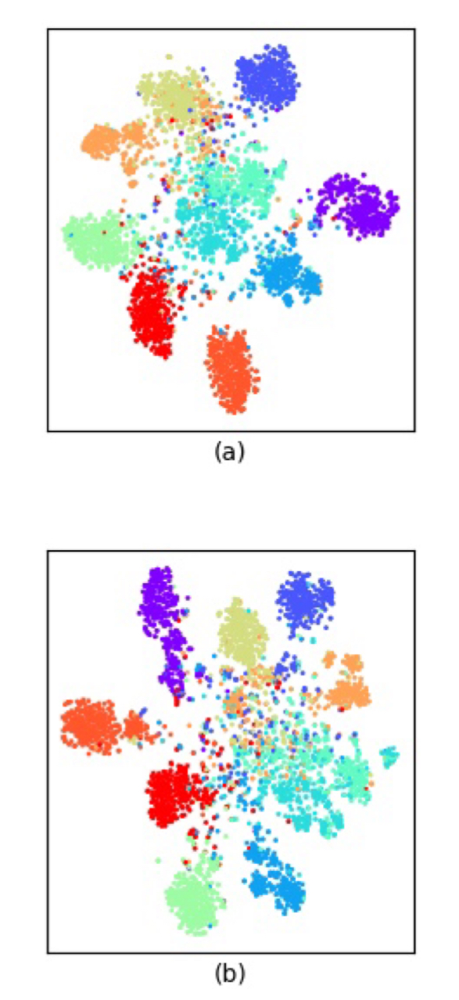
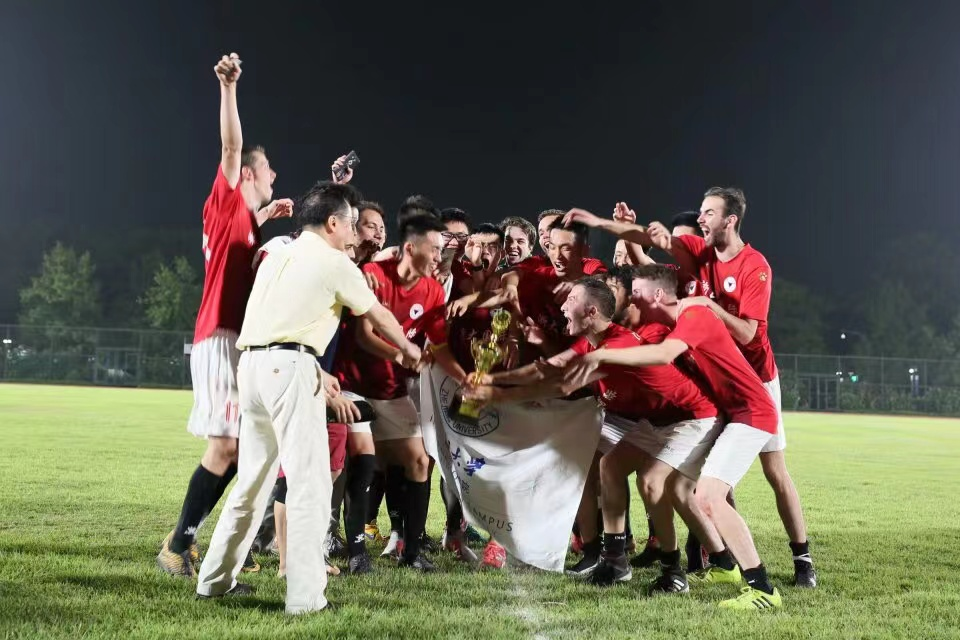
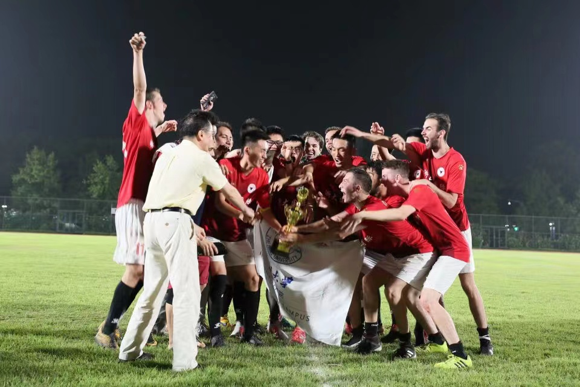

Zilinghan Li
I am a senior student from the University of Illinois Urbana-Champaign and Zhejiang University. I major in Computer Engineering. I am interested in machine learning and deep learning applications, and I plan to pursue a master's degree in this area.
Publication
Research
ActiveMatch: End-to-end Semi-supervised Active Representation Learning
 Paper | Advised by Professor Gaoang Wang
Semi-supervised learning (SSL) is an efficient method to train models with both labeled and unlabeled data. However, constrained by the limited number of labels, the learned representations of SSL are ambiguous and not distinguishable for inter-class samples. Moreover, the performance of SSL is also largely dependent on the model initialization. To deal with the drawbacks of SSL, we propose a novel end-to-end representation learning method, namely ActiveMatch, which combines SSL with contrastive learning and active learning to fully leverage the limited labels. Starting from a small amount of labeled data with unsupervised contrastive learning as a warm-up, ActiveMatch then combines SSL and supervised contrastive learning, and actively selects the most representative samples for labeling during the training, resulting in better representations towards the classification. Compared with MixMatch and FixMatch, we show that ActiveMatch achieves the state-of-the-art performance, with 89.24 accuracy on CIFAR-10 with 100 collected labels, and 92.20 accuracy with 200 collected labels.
Movie Characters Recognition using Deep Learning

Advised by Professor Volodymyr Kindratenko
We developed a deep learning network to generate the time slots in which each character appears. This model will be used as a tool to assist movie analysis by the automatic generation of the statistical data of the movie. The gif above is one sample output from an unsupervised model. We are now working on improving the recognition accuracy by applying the semi-supervised learning method to the network.
SEMI: A Scalable and Extendible Generative Adversarial Imputation Toolbox.

Work as the research assistant at Zhejiang University Center for Data Science
The dramatically increasing volume of incomplete data makes the imputation models computationally infeasible in many real-life applications. In this demonstration, we propose a scalable and extendible data imputation toolbox, SEMI, to deal with large-scale incomplete data imputation efficiently and visually. SEMI consists of three modules: data preprocessing, data imputation, and post-imputation prediction. It is built upon SCIS, an effective scalable imputation system, to significantly speed up the training of the differentiable generative adversarial imputation models under accuracy-guarantees for large-scale incomplete data. Using a public large-scale incomplete weather dataset, we demonstrate that, SEMI is capable of assisting users to efficiently address real-life large-scale imputation issues, from the aspects of high-efficient imputation system, user-friendly performance visualization, and easy-to-use interaction operation.
Unbounded Barrier-Synchronized Concurrent ASMs

Paper | Slides | Advised by Klaus-Dieter Schewe
MapReduce is an algorithm for processing large data sets in parallel and bulk synchronous parallel (BSP) model is a model for parallel computation consisting of alternating computation and communication phases. We extend the normal execution of MapReduce from processing large finite data sets to processing stream queries with input data stream assumed to continue indefinitely. We first propose a classification of stream queries to divide stream queries into three classes: memoryless, semi-memoryless and memorable, and provide the implementation models for each class using MapReduce based on BSP. In addition, since handling some stream queries requires a large amount of computing sources, the BSP computation model is extended to Infinite-Agent BSP (Inf-Ag-BSP) computation model, which can capture unbounded number of agents though only finitely many of them will be simultaneously activated. A behavioral theory is developed for Inf-Ag-BSP model based on the behavioral theory of general BSP model, which consists of the axiomatization, the definition of Infinite-Agent BSP abstract state machine (Inf-Ag-BSP-ASM) and the proof that such ASM captures Inf-Ag-BSP computations.
FPGA based Game Design: Fruit Ninja
Demo-Single Player | Demo-Double Player | Advised by Chushan Li
The game is the final project of course ECE385: Digital System Laboratory. It was designed and implemented using System Verilog on FPGA. The game has two mouse (one USB mouse and one PS2 mouse) as inputs and a VGA display as outputs. The game supports both single-player mode and double-player mode. You are invited to watch the demo videos for both modes by clicking the corresponding links above.
Teaching
I worked as a teaching assistant for two semesters. The primary responsibilities are: holding a weekly discussion session for students to help them learn course materials and finish discussion sheets, grading weekly homework and exams, holding weekly office hours to provide support to students.
Math 241: Calculus Ⅲ (Fall 2020)
ECE 120: Intro to Computing (Spring 2021)
Life
My life is colorful! I am a crazy sports fan, and I especially love basketball (watching NBA) and football. I have participated in many basketball and football competitions in my university life. I won the champion of Zhejiang University Sanhao Football Cup (三好杯) in 2019 summer, the champion of Zhejiang University International Campus Freshmen Football Cup (新生杯) in 2019 winter as the caption of the ECE Football team, and the champion of Zhejiang University International Campus Canglang Basketball Cup (沧浪杯) in 2019 spring. What a wonderful year! There are also many other unforgettable experiences in the past three years, such as the volunteering teaching in Guilin, Guangxi, China.
Sanhao Cup with My Wonderful Team

 
